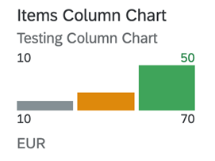

One axis of the chart shows the categories being compared, the other axis represents a value.

For more information on this chart type, refer Samples documentation.
The UI.Chart Title property is used for the title.
The UI.Chart Description property is used for the subtitle.
<Annotation Term="UI.Chart" Qualifier="SpecificationWidthColumnChart"> <Record Type="UI.ChartDefinitionType"> <PropertyValue Property="Title" String="Product Width Specification Column Chart"/> <PropertyValue Property="Description" String="Describe Column Chart"/> <PropertyValue Property="ChartType" EnumMember="UI.ChartType/Column"/> <PropertyValue Property="Criticality" Path="criticalityValue"/> <PropertyValue Property="Measures"> <Collection> <PropertyPath>Width</PropertyPath> </Collection> </PropertyValue> <PropertyValue Property="Dimensions"> <Collection> <PropertyPath>Day</PropertyPath> </Collection> </PropertyValue> <PropertyValue Property="MeasureAttributes"> <Collection> <Record Type="UI.ChartMeasureAttributeType"> <PropertyValue Property="Measure" PropertyPath="Width"/> <PropertyValue Property="Role" EnumMember="UI.ChartMeasureRoleType/Axis1"/> <PropertyValue Property="DataPoint" AnnotationPath="@UI.DataPoint#Width"/> </Record> </Collection> </PropertyValue> </Record> </Annotation>
<Annotation Term="UI.DataPoint" Qualifier="Width"> <Record> <PropertyValue Property="Value" Path="Width"/> <PropertyValue Path="Day1" Property="Title" /> <PropertyValue Property="Description" String="Column Micro Chart"/> <PropertyValue Property="TargetValue" Path="Weight"/> <PropertyValue Property="ForecastValue" Path="Height"/> <PropertyValue Property="MinimumValue" Decimal="0"/> <PropertyValue Property="MaximumValue" Decimal="100"/> <PropertyValue Property="Criticality" Path="criticalityValue"/> </Record> </Annotation>
For semantic coloring, both Criticality and
CriticalityCalculation are supported
(Criticality overrides
CriticalityCalculation).
Mandatory:
UI.Chart → ChartType:
“Donut”UI.Chart → MeasuresUI.Chart → MeasureAttributes →
DataPointUI.DataPoint → ValueCriticalityCalculation is used for semantic coloring,
thenUI.DataPoint →
CriticalityCalculation
UI.DataPoint →
CriticalityCalculation/ImprovementDirection